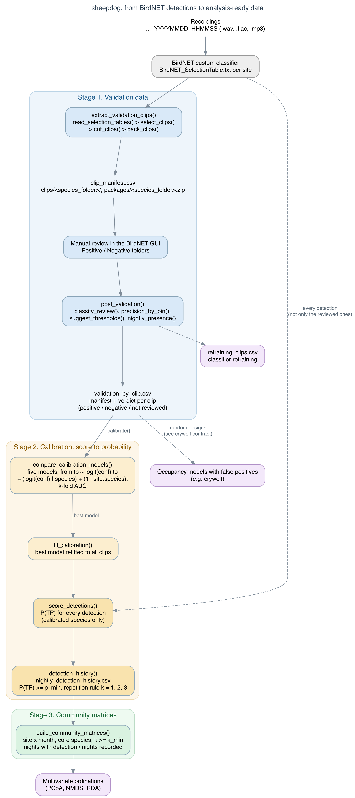
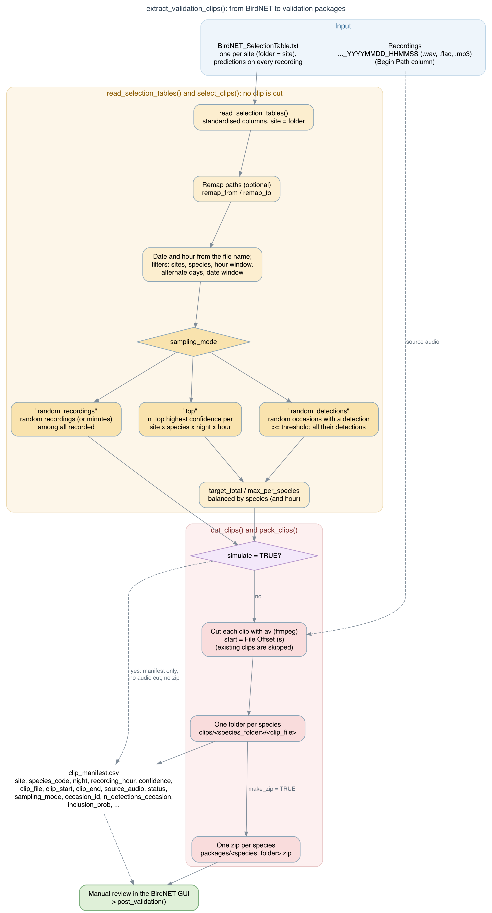

In the fable, the boy cries “wolf!” and the villagers have to decide whether the wolf is real. sheepdog does that check for automated detections from BirdNET custom classifiers in passive acoustic monitoring (PAM). It runs three stages:
- Validation data. Build clip sets for manual review from the BirdNET selection tables: top-score, random-occasion or random-recording designs, one folder per species, ready for the review tab of the BirdNET GUI. Then summarise the reviewed clips: precision by confidence bin, suggested thresholds, confirmed presence by night and clips for retraining.
- Calibration. Turn confidence scores into probabilities of true detection with hierarchical logistic models (species and site x species effects, compared by cross-validation). Score every detection and build nightly detection histories.
- Community matrices. Turn the calibrated histories into effort-standardised site x month matrices for multivariate ordinations.
sheepdog was developed for the FrogNet project (anurans of the Pantanal and Cerrado, Mato Grosso do Sul, Brazil), but it works with the output of any BirdNET custom classifier. Its validation outputs feed occupancy models with false positives fitted with crywolf. The two packages are independent: sheepdog does not depend on crywolf.

Installation
Install the package from r-universe, which provides binaries for Windows, macOS and Linux:
install.packages("sheepdog",
repos = c("https://diogoprov.r-universe.dev",
"https://cloud.r-project.org"))The development version can be installed from GitHub:
# install.packages("remotes")
remotes::install_github("diogoprov/sheepdog")Cutting audio needs av (it bundles ffmpeg), the hierarchical calibration needs lme4, and the figures need ggplot2:
install.packages(c("av", "lme4", "ggplot2"))Usage
library(sheepdog)
# 1a. Clips to review: check the selection first, then cut
extract_validation_clips("N:/Arara", "N:/Arara/validation",
remap_from = "N:/", remap_to = "/Volumes/Arara/",
simulate = TRUE)
extract_validation_clips("N:/Arara", "N:/Arara/validation",
remap_from = "N:/", remap_to = "/Volumes/Arara/")
# 1b. After the review in the BirdNET GUI
post_validation(review_dir = "N:/Arara/validation/clips",
manifest_path = "N:/Arara/validation/clip_manifest.csv",
output_dir = "N:/Arara/validation/results")
# 2. Calibration and nightly detection histories
calibrate(validation_files = c("UEM/validation_by_clip.csv",
"ARA/validation_by_clip.csv"),
prediction_tables = c(UEM = "UEM/BirdNET_SelectionTable.txt",
ARA = "ARA/BirdNET_SelectionTable.txt"),
output_dir = "calibration")
# 3. Community matrices
build_community_matrices("calibration/nightly_detection_history.csv",
"community_matrices",
core_species = c("boa_ran", "den_nan", "phy_alb"))Each stage is also available as separate functions: select_clips() (a pure function that returns the clip manifest without touching audio), cut_clips(), classify_review(), compare_calibration_models(), score_detections(), community_matrices() and others. See vignette("frognet-workflow") for the complete workflow.
The selection tables must have the standard BirdNET/Raven columns Begin Time (s), End Time (s), Species Code, Confidence, Begin Path and File Offset (s), and the recordings must be named ..._YYYYMMDD_HHMMSS.
Sampling designs
select_clips() and extract_validation_clips() take sampling_mode:
-
"top"(default) keeps the N predictions with the highest confidence per site x species x night x hour. It serves retraining and the score-to-probability calibration (the model is conditional on the score). It does not serve to estimate false-positive rates: top-score clips hold fewer false positives than a random sample. -
"random_detections"follows the observation-confirmation design of Chambert et al. (2015): occasions with at least one prediction >=thresholdare drawn at random within strata that do not depend on the score, and every prediction >=thresholdof a drawn occasion is cut. -
"random_recordings"follows the multiple-method design of Miller et al. (2011): recordings (or minutes) are drawn among all those recorded, with or without predictions, for annotation by ear. The clip is the whole recording andconfidenceisNA.

The manifest records occasion_id, n_detections_occasion and inclusion_prob (the probability that the occasion was drawn). Every draw uses a fixed seed, so a rerun selects the same clips, and the cut is idempotent: an interrupted run resumes where it stopped.
Calibration
Converting BirdNET confidence scores into probabilities is recommended by the BirdNET authors (Wood & Kahl 2024); calibration by logistic regression on logit(score) is applied, for instance, by Owens et al. (2026). calibrate() extends that approach with a hierarchical multi-species structure,
tp ~ logit(conf) + (logit(conf) | species) + (1 | site:species)because the same score corresponds to very different probabilities of a true detection across species and sites. The candidate models are compared by stratified k-fold cross-validation (AUC).
Integration with crywolf
clip_manifest.csv and validation_by_clip.csv are the hand-off to occupancy models with false positives. vignette("crywolf-integration") specifies their columns, types and the definition of an occasion; example files are in system.file("extdata", package = "sheepdog"). Do not pass the whole-recording clips of "random_recordings" (confidence = NA) to the validation argument of crywolf::fp_aggregate(): they are the second method (manual annotation), not confirmations of detections.
From the scripts (v1.2.0) to the package (v2.0.0)
Up to v1.2.0 this repository held four R scripts. Version 2.0.0 turns them into the sheepdog package, with English function names, arguments, output columns and values. NEWS.md maps every script setting to its argument and every old column to its new name. The package reads manifests, validation tables and histories written by v1.2.0, so validated data stay usable. The scripts are preserved in the v1.2.0 tag.
Authorship and citation
Developed by Diogo B. Provete (Universidade Federal de Mato Grosso do Sul), from the protocol design of Larissa S. M. Sugai (Cornell Lab of Ornithology) and Liliana Piatti (UFMS), within the FrogNet project. Code written with AI assistance (Claude, Anthropic), with human review and tests.
If sheepdog is useful in your work, please cite it (GitHub’s “Cite this repository” button uses CITATION.cff):
Provete, D. B. (2026). sheepdog: sample, validate and calibrate BirdNET detections for passive acoustic monitoring (v2.1.0). Zenodo. https://doi.org/10.5281/zenodo.22696210
The hex sticker uses a dog silhouette by Mozillian from PhyloPic (CC0 1.0).